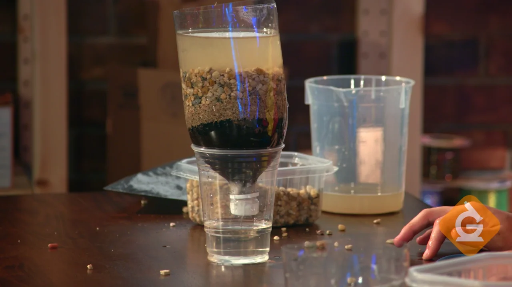

Caso não purificada, a água pode lhe causar infecções, doenças, pode conter vírus e parasítas, e em casos mais graves, pode levar a falência.
Por isso é muito importante purificar a água antes do seu consumo.
A filtração é essencial pois ela remove as maiores particulas sólidar, como areia, graõs, materiais orgânicos e sólidos como minerais e minérios, tornando viável os próximos passos para a purificação.
